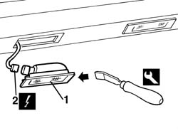
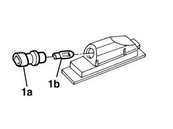

5540A94 l/h or r/h number plate light (one) - r+r
- Path
- Procedures > 55 ELECTRICAL EQUIPMENT > 5540 EXTERIOR LIGHTING > 5540A lighting > 5540A94 l/h or r/h number plate light (one) - r+r
- Kind
- repair procedure (removal / refitting; the operation number is the code)
- Applies to
- all engines; all production periods
- Interactive page
- https://sloeber94.github.io/elrnDB-a156/en/#/3238443
Applies to: all engines; all production periods
 Removing
Removing
 Refitting
Refitting1. Operating from the right side, by a screwdriver, and take the light off.
2. Disconnect the electrical connection.
 | Name | Connector |
|---|---|---|
2 | Left number plate light |
| Name | Connector |
|---|---|---|
2 | Right number plate light |

Applies to: all engines; all production periods
1. If necessary, turn the light holder (1a) anticlockwisely, extract it and take the light off (1b).(Pressure clucht)

Applies to: all engines; all production periods
Refitting
RemovingCheck that the light and the lamp are not damaged.
If it the light has been taken off, reassemble it in the light holder.
Connect the electrical connetion.
Test the funcionality of the number plate light.
Put the light in.